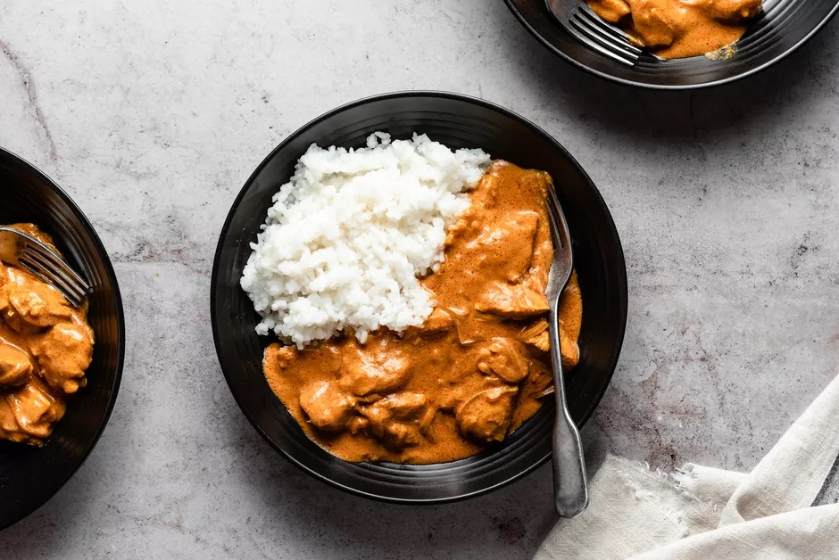

Butter Chicken
Butter Chicken

Butter chicken with rice in a black bowl
Butter chicken is a simple and flavorful dish to prepare at home. It is an Indian dish that can be easily customized to your particular taste. It is typically eaten with bread or rice. This recipe will take about 30 minutes to prepare, 38 minutes to cook and will easily serve 4 people. Bone a petite!
Ingredients
- 2 teaspoons garam masala
- 2 teaspoons tandoori masala powder
- 2 teaspoons madras curry powder
- 1 teaspoon ground cumin
- 1/2 teaspoon ground cardamom
- 1/2 teaspoon ground cayenne pepper
- Salt and ground black pepper to taste
- 1 1/2 pounds bones, skinless chicken thighs, cut into bite-size pieces
- etc...
Steps
- Mix garam masala, tandoori masala, curry, cumin, cardamom, cayenne, salt, and black pepper together in a small bowl to make spice mixture.
- Place chicken in a large bowl and add 1/2 the spice mixture; turn to coat evenly.
- Melt 1 tablespoon butter in a large skillet over medium heat. Add chicken; cook and stir until lightly browned, about 10 minutes. Remove from heat.
- etc...